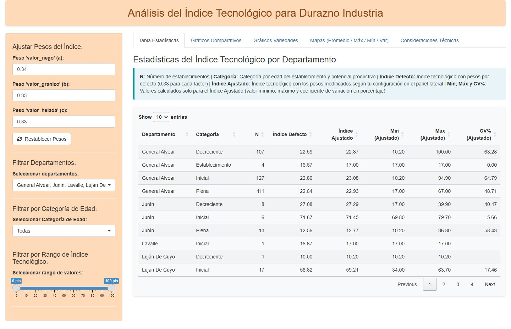
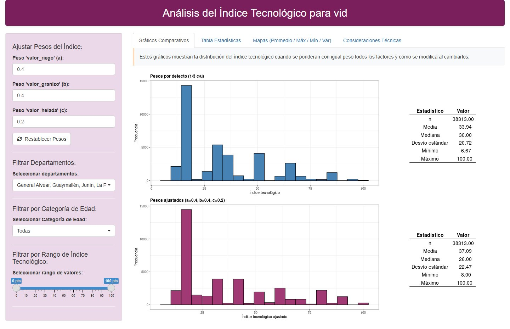
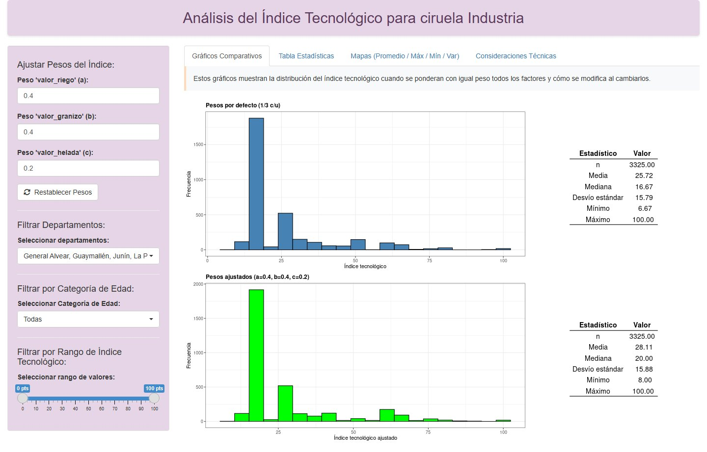
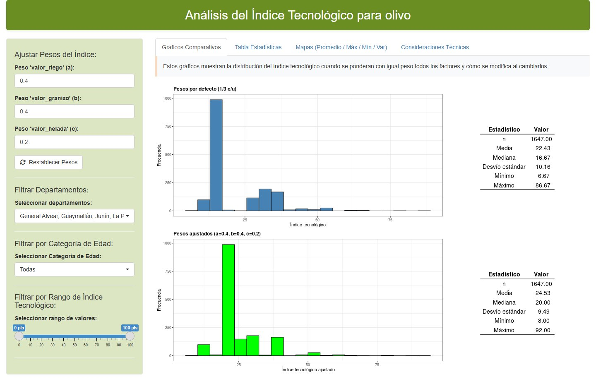

Los tableros presentan el Índice Tecnológico de los establecimientos frutícolas de Mendoza, calculado a partir del Registro Único de Tierras (RUT). Permiten ajustar los pesos de cada factor, filtrar por departamento, categoría de edad y rango del índice, y consultar la estadística y los mapas departamentales de promedio, máximo, mínimo y varianza.

Vid
Ver tablero
Ciruela industria
Ver tablero
Olivo
Ver tableroConsideraciones técnicas
Los cuatro tableros comparten la misma metodología. El índice tecnológico resume el nivel de tecnología de manejo de cada establecimiento a partir de tres prácticas:
1 Sistemas de riego
Se ponderan de mejor a peor combinando varios factores:
- Eficiencia en el uso del agua
- Grado de automatización
- Nivel tecnológico y de inversión
- Capacidad de control sobre la aplicación de agua
- Adaptabilidad a distintos cultivos y suelos
2 Defensa contra granizo
Se estima el porcentaje de malla anti‑granizo de cada productor:
- porc_malla = (área con malla / área del lote) × 100
- 0 → sin malla
- 1 a 50 → baja cobertura
- 51 a 99 → alta cobertura
- 100 → cobertura total
3 Defensa contra heladas
Se valora el nivel de protección que brinda el sistema según:
- Grado de intervención tecnológica
- Costo de implementación y mantenimiento
- Capacidad de control
- Aplicabilidad y uso en fruticultura intensiva
Índice tecnológico = α × valor_riego + β × valor_granizo + γ × valor_heladas,
donde los coeficientes suman 1. Los tableros permiten modificar esos pesos y recalculan el índice en el momento.
Ajuste por riesgo: cuando el riesgo de helada o granizo es menor al 10 % y el valor tecnológico de la práctica es menor a 50, el valor se duplica; en los demás casos se mantiene sin cambios. Así, las prácticas de bajo nivel tecnológico reciben mayor peso relativo en zonas de bajo riesgo, donde resultan menos necesarias.